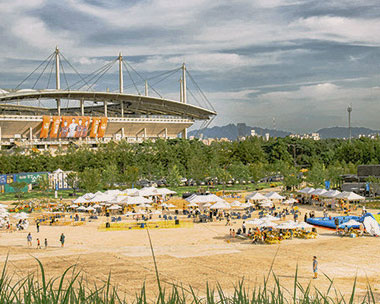
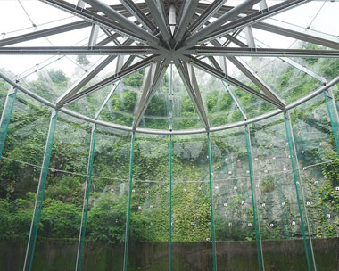
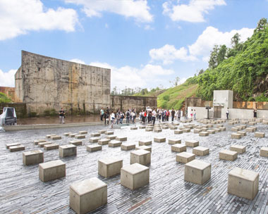
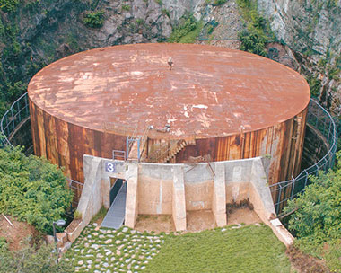
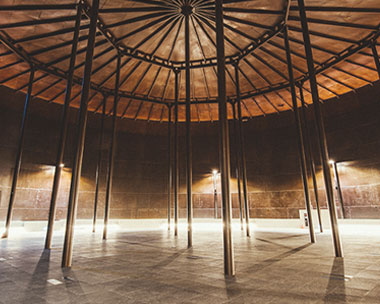
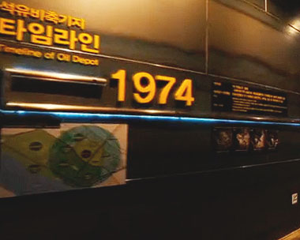
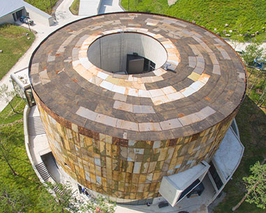

공원안내
문화비축기지에 대한 이야기를 볼 수 있습니다.
-
T0.문화마당
문화비축기지에서 제일 처음 만나는 공간으로
대규모 축제와 시장, 공연 등이 열립니다.옛 가압펌프장은 아트 스페이스 용궁으로 변신하여
유명작가(스티븐 퓨지 Stephen Pusey)의
벽화 용의노래(Dragon song)를 감상 할 수
있고 모래고래 놀이터와 에코 쉘터가 있습니다. -
T1.파빌리온
휘발유를 보관했던 탱크입니다.
유리로 벽과 지붕을 만들어 탱크모양을 유지했습니다.문화통로를 지나 유리 파빌리온에 들어서면 40여년간
땅 속에 묻혀있던 탱크의 시선에서 매봉산의 암반을
감상할 수 있습니다. 날씨와 시간의 변화를 느낄 수 있는
매력적인 공간으로 전시와 공연, 워크숍
등을 진행할 수 있는 복합문화공간입니다. -
T2.공연장
경유를 보관했던 거대한 탱크는
야외무대와 실내공연장이 되었습니다.하늘을 향해 열린 야외무대와 옹벽은
매봉산의 암벽과 만나 자연이 빚어낸
울림공간을 이룹니다. 계단을 따라 내려가면
또 하나의 특별한 실내공연장이 있어
소규모의 공연과 행사를 진행할 수 있습니다. -
T3.탱크원형
경유를 비축하던 당시의 탱크원형을
그대로 보존했습니다.석유 탱크를 따라 오르내리던 가파른 계단과
유량을 재던 계측기 등을 관람할 수 있습니다.
문화비축기지를 조망하기에 좋은 장소이기도 합니다. -
T4.복합문화공간
등유를 비축하던 탱크의 원형을 유지했습니다.
내부의 어둠이 있고 외부의 옹벽
소화액관을 체험할 수 있는 공간입니다.
공간의 울림과 빛을 활용하여
복합문화예술을 연출할 수 있습니다. -
T5.이야기관(전시관,미디어관)
등유가 있던 이곳은 1층의 미디어관과
2층의 전시관으로 조성되었습니다.우리나라에 석유가 유입되어 사회,경제 문화에
영향을 미쳤던 흥미로운 이야기들을
디지털콘텐츠로 경험할 수 있게 구성했습니다.
그리고 탱크의 안과 밖, 탱크를 보호하던 옹벽과
매봉산의 암벽, 절개지를 모두 볼 수 있는 공간입니다. -
T6.커뮤니티센터
T1과 T2를 해체한 철판을
외장재로 활용하여 신축하였습니다.운영사무실과 창의랩, 강의실, 원형회의실
에코라운지와 옥상마루, 카페테리아가 있습니다.
공원의 문화예술행사와 체험프로그램이 운영됩니다.